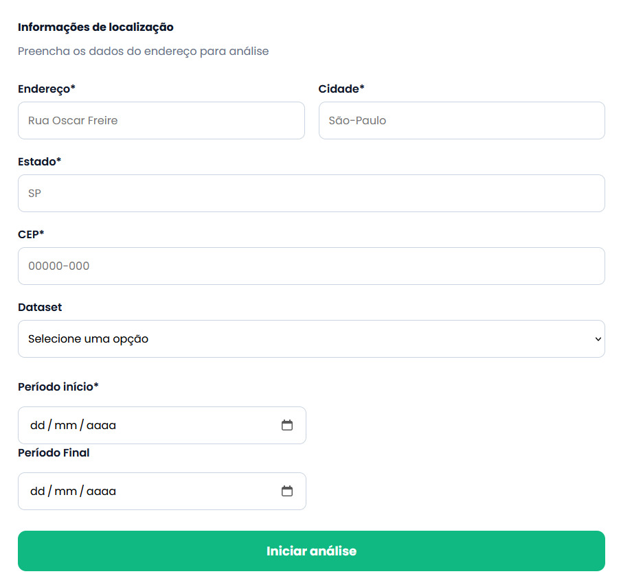

Banner Digital Interativo • GitHub Pages
Apollo Project
Uma solução tecnológica para democratizar o acesso à análise de viabilidade de energia renovável, transformando dados ambientais complexos em recomendações claras e precisas.
Preview da Solução

Contexto
Problema identificado
Atualmente, milhões de pessoas e empresas no Brasil e no mundo desejam investir em energia renovável para reduzir custos com eletricidade e contribuir com o meio ambiente. No entanto, a maioria enfrenta uma barreira significativa: a dificuldade em avaliar se sua localização é viável para instalação de sistemas de energia solar, eólica ou outras fontes sustentáveis.
Os principais afetados são proprietários de residências, pequenos e médios empresários, agricultores e gestores de condomínios que não possuem recursos para contratar consultorias especializadas, que custam em média R$ 2.000 a R$ 8.000 por análise.
Consequências deste problema: Investimentos mal planejados resultam em sistemas de energia renovável com baixa eficiência, retorno financeiro demorado ou até prejuízo total. Segundo estudos do setor, cerca de 30% das instalações solares não atingem o desempenho esperado por falta de análise prévia adequada.
Dores dos usuários
"Eu gostaria de instalar painéis solares na minha casa, mas não sei se minha região recebe sol suficiente. Não tenho como pagar uma consultoria cara só para descobrir isso."
Proposta
Solução desenvolvida
O Apollo Project é uma plataforma web que democratiza o acesso à análise de viabilidade de energia renovável. Através de uma interface simples e intuitiva, qualquer pessoa pode consultar um endereço e receber instantaneamente um relatório completo sobre a viabilidade de instalação de sistemas de energia sustentável.
💡
Proposta de Valor
Transformamos dados climáticos complexos (incidência solar, velocidade do vento, temperatura média, índice pluviométrico) em análises simples e práticas. O usuário obtém em minutos o que antes levaria semanas e custaria milhares de reais.
⚙️
Funcionalidade Principal
Sistema de consulta por endereço que cruza informações de APIs de dados climáticos (NASA, NOAA, INPE) com algoritmos de análise para calcular: potencial de geração de energia, viabilidade econômica, tempo de retorno do investimento e melhor tecnologia para o local.
📱
Experiência do Usuário
Interface responsiva e intuitiva: o usuário insere o endereço, visualiza dados em gráficos interativos (radiação solar mensal, padrões de vento, temperatura) e recebe recomendações personalizadas com linguagem acessível, sem termos técnicos complexos.
Implementação
Tecnologias utilizadas
Stack moderno focado em desempenho, escalabilidade e experiência do usuário
HTML5
CSS3
JavaScript
APIs NASA/NOAA/INPE
API openEO
GitHub Pages
Figma
LucidChart
Arquitetura
Frontend: Interface web responsiva construída com HTML, CSS e JavaScript, onde o usuário insere o endereço e visualiza os resultados.
Integração de APIs: Consumo de dados climáticos de fontes confiáveis (NASA POWER API para radiação solar, OpenWeatherMap para dados meteorológicos, OpenCage para geocodificação, openEO para comunicação com satélites)
Processamento: Algoritmos JavaScript para cálculo de viabilidade, análise de dados históricos (últimos 10 anos) e geração de recomendações
Visualização: Resumo relatorial mostrando tendências de radiação solar, padrões climáticos e projeções de geração de energia
Como a solução funciona
O Apollo Project utiliza uma arquitetura moderna baseada em:
Usuário
→
Interface Web
→
APIs Externas
→
Processamento e Análise
Demonstração
Apresentação do MVP
Veja como funciona a plataforma Apollo Project em ação
Área de Demonstração
Ver Protótipo
Impacto
Democratização do acesso: Permitir que pessoas de todas as classes sociais possam avaliar a viabilidade de energia renovável sem custos proibitivos
Redução de investimentos mal planejados: Evitar prejuízos causados por instalações em locais inadequados, economizando recursos financeiros
Incentivo à energia limpa: Facilitar a transição para fontes de energia sustentáveis, reduzindo emissões de CO₂
Educação ambiental: Conscientizar usuários sobre potencial energético de suas regiões e benefícios das energias renováveis
Resultados esperados e ODS
O Apollo Project contribui diretamente para o alcance dos Objetivos de Desenvolvimento Sustentável da ONU, especialmente:
ODS 7
"Garantir o acesso a fontes de energia fiáveis, sustentáveis e modernas para todos"
O Apollo Project alinha-se completamente com este objetivo ao tornar a análise de viabilidade de energia renovável acessível, rápida e gratuita para todos.
Energia Limpa e Acessível
Equipe
Integrantes do projeto
Conheça os desenvolvedores por trás do Apollo Project
A
Enzo Akio Koga
Fullstack Dev
B
Lucas Torres Fernandes
Product Owner
C
Renan Jorge Aleixo
Frontend Dev
D
Thiago Andrade
Database Admin
Acesse o projeto durante a apresentação
Use o QR Code para abrir esta landing page no celular, acessar o repositório ou testar o protótipo.